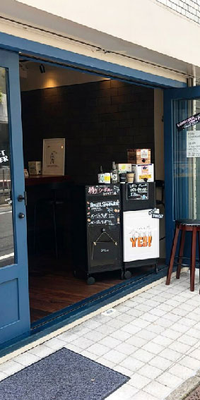
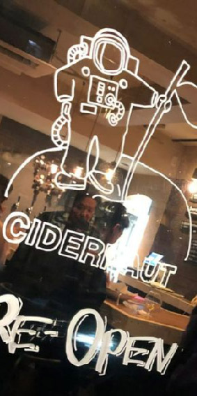
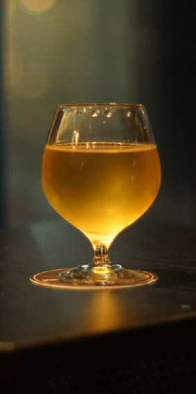
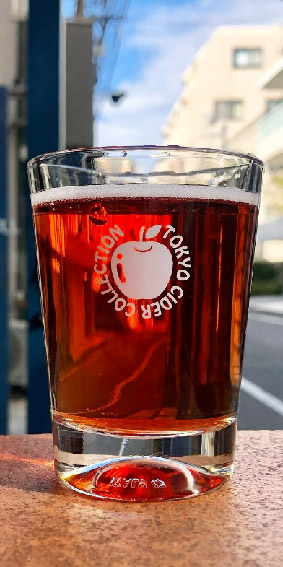

Cidernaut
「ハードサイダー」を中心に取り扱うパブ。常時、8〜10タップのドラフトサイダーと、40種類前後の缶やボトルのハードサイダーをとり揃えております。 料理は、ハードサイダーと相性抜群なフィッシュ＆チップスやベーグルサンドといったパブフードを用意。しゅわっと爽やかなハードサイダーは、日本を含め様々な国のものがあります。この機会にサイダーを飲み比べて、自分好みのサイダーを探してみてはいかがでしょうか。


ハードサイダーとは
サイダーとは、りんごの醸造酒のことをいいます。イギリスやフランス、スペイン、アメリカ、オーストラリアなど世界各国で造られ飲まれているお酒です。サイダー、シードル、シードラなど呼び方は様々で、国ごとに少しずつ違った名前で古くから親しまれています。 国ごとに使用しているりんごの割合が違ったり、味わいの特徴も違いますが、基本的にはフルーティーで重くなく、軽くスッキリ楽しめるものがほとんどで、アルコールを感じにくいものが多いのが特徴です。


お問い合わせ
Tell:03-6407-8848
Mail:cidernaut@outlook.com
電話、DMで予約受け付けております。